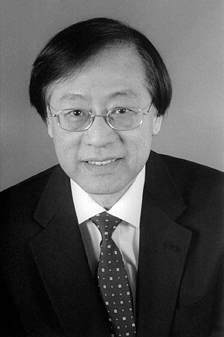

|  |
2000 год Andrew Chi-Chih Yao (1946) «В дань его фундаментальному вкладу в теорию вычислений, включающему, основанную на понятии сложности вычисления, теорию генерации псевдослучайных чисел, криптографии, и коммуникационной сложности» |
Страна: КНР
Образование: Доктор философии в области физики, Гарвардский университет, 1972. Доктор философии в области информатики, Иллинойский университет, 1975
О лауреате
Yao работал год на кафедре математики в МИТе, а затем в 1976 году присоединился к кафедре компьютерных наук в Стэнфордском университете в качестве доцента. В течение следующих пяти лет он внес ряд фундаментальных вкладов в теорию алгоритмов.
Его работа 1977 года «Вероятностные вычисления: на пути к унифицированным измерениям сложности» (“Probabilistic computations: toward a unified measure of complexity”) содержала принцип, в настоящее время известный как принцип минимакса Yao (“Yao's minimax principle”) - нижних и верхних границ сложности рандомизированных алгоритмов. Он использовал теорему о минимаксе von Neumann из теории игр, для связи средней сложности детерминированных алгоритмов с наихудшей сложностью этих алгоритмов. Yao доказал, что ожидаемое время выполнения любых рандомизированных алгоритмов при введенных наихудших входных данных равно среднему времени выполнения любого детерминированного алгоритма наихудшего распределения этих данных. Принцип Yao был использован в теории обучения.
В это же время Yao также внес фундаментальный вклад в теорию структур данных.
Его статья 1978 года «Должны ли таблицы быть отсортированы?» (“Should Tables Be Sorted?”) вводит абстрактную модель для анализа структур данных, в которой стоимость вычисления измеряется общим количеством обращений к памяти.
Yao год работал профессором на кафедре компьютерных наук Калифорнийского университета, Беркли, а с 1982 года в Стендфорде.
В начале 80-ых Yao писал труды, повлиявшие на зарождение криптографии, информационной безопасности, вычислительной сложности и вероятностных вычислений. Эти работы важны не только из-за полученных результатов, но и из-за нововведенных моделей и методов, которые в настоящее время считаются основополагающими в соответствующих областях.
Его статья 1981 года в соавторстве с Danny Dolev «О безопасности протокола открытого распределения ключей» (“On the security of public-key protocols”) вводит формальную модель для обоснования целесообразности использования протоколов безопасности. Эта модель положена в основу “Dolev-Yao model”, которая широко используется в криптографии для описания среды, в которой происходит обмен шифрованными сообщениями, в особенности — при построении криптодоказующих программ. Модель стала отправной точкой для большинства работ по безопасности и до сих пор продолжает оставаться активной областью исследований.
Согласно “Dolev-Yao model” любое сообщение, отправляемое по сети, должно рассматриваться как неизбежно проходящее через злоумышленника, либо как посланное им. Тем не менее, злоумышленник не является всемогущим. Контролируя средства связи, злоумышленник, тем не менее, не может получить доступ к закрытым, внутренним ресурсам, например, к памяти или жёсткому диску пользователя. “Dolev-Yao model” используется при рассмотрении протоколов аутентификации и авторизации в телекоммуникационных сетях.
Также Yao внес большой вклад в криптографию, основываясь на понятии сложности вычисления. В 1982 году он опубликовал две статьи: «Теория и применение функций-лазеек» (“Theory and applications of trapdoor functions”) и «Протоколы для безопасных вычислений» (“Protocols for secure computations”).
В первой из этих работ рассматривается возникшая в то время идея криптографии открытого ключа с теоретической точки зрения, закладывается основа теории вычислительной случайности. Его достижения в этой области показали, что безопасное шифрование может быть основано на сложности некоторых вычислительных задач, например, квадратичных вычетов, или факторизации целых чисел. Для этого он формализовал запись однонаправленных функций, значение которых легко вычислить, но тяжело провести обратную операцию. Он доказал, что однонаправленные функции с определённым свойствами могут лечь в основу генераторов псевдослучайных чисел.
Во второй вводится новая парадигма для оценки безопасности протоколов конфиденциального вычисления, определяется ряд различных требований в зависимости от конкретной ситуации, вводится известная “проблема миллионеров” - Алиса и Боб, хотят выяснить, кто же из них богаче, при этом они не хотят разглашать точную сумму своего благосостояния. Yao предложил в своей статье оригинальный способ решения этой задачи - создается протокол, который позволяет двум сторонам, каждая из которых имеет номер, определить, кто имеет большее число, не раскрывая фактические значения.
С 1986 года Yao стал профессором технических наук в Принстонском университете. В этот период жизни он продолжил свою работу над основами криптографии. Начиная с 1990-х годов Yao начал работать исключительно в сферах квантовых вычислений и связи, теории информации и теории алгоритмов.
Ключевые слова: Yao’s Principle (принцип минимакса Яо), Dolev-Yao model (модель Долева-Яо), Cryptography theory (теория криптографии)
Краткая библиография
1. |
Yao, Andrew Chi-Chih, “Probabilistic Computations: Toward a Unified Measure of Complexity” (Extended Abstract), 18th Annual Symposium on Foundations of Computer Science (FOCS ’77), IEEE Computer Society, 1977, pp. 222-227. Статья рассматривает вероятностные вычисления с двух точек зрения: распределения вероятностей для входных данных и использование случайности в алгоритмах, учитывая принцип Yao. |
2. |
Dolev, Danny and Andrew Chi-Chih Yao, “On the security of public key protocols,” IEEE Transactions on Information Theory, Vol. 29, Num. 2, 1983, pp. 198-207. Авторы представляют модель для анализа криптографических протоколов, которая получила название «модель Dolev-Yao» и является основой большинства современных подходов к формальной верификации таких протоколов. |
3. |
Yao, Andrew Chi-Chih, “Should Tables Be Sorted?” (Extended Abstract), 19th Annual Symposium on Foundations of Computer Science (FOCS ’78). IEEE Computer Society, 1978, pp. 22-27. Статья вводит модель сотового зонда для анализа структур данных, в которой стоимость вычислений – это количество обращений к произвольной ячейке памяти. |
4. |
Yao, Andrew Chi-Chih, “Protocols for Secure Computations” (Extended Abstract), 23rd Annual Symposium on Foundations of Computer Science (FOCS ’82), IEEE Computer Society, 1982, pp. 160-164. Статья вводит понятие оценки безопасности функции и предоставляет отчёт по исследованию «Проблемы миллионеров». |
5. |
Yao, Andrew Chi-Chih, “How to Generate and Exchange Secrets” (Extended Abstract), 27th Annual Symposium on Foundations of Computer Science (FOCS ’87), IEEE Computer Society, 1986, pp. 162-167. |